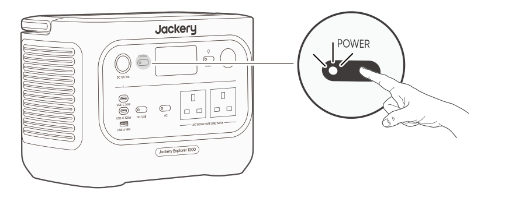
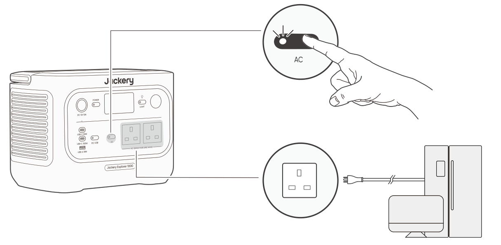
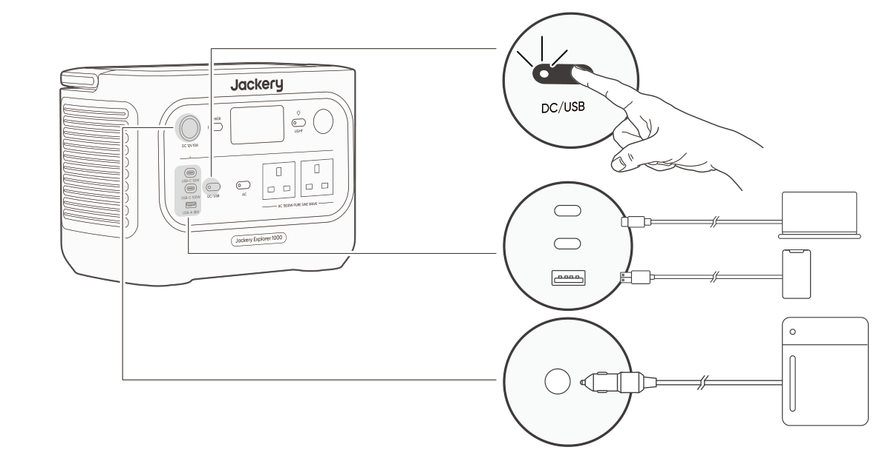

Quarantine artwork. This is an isolated local rendering of the real review RST through the A-line flow renderer. It is not an approved asset or published page.
POWER ON/OFF

OnPress once.
OffPress and hold for 3s.
3s
Default standby time: 2 hours.
The product will automatically shut down after 2 hours of inactivity, with no charging or discharging.
*The standby time can be set in the Jackery App.
When Energy Saving Mode is enabled, the product will automatically shut down after 12 hours if the AC or DC/USB power button is ON but the product is neither charging nor discharging.
AC OUTPUT ON/OFF
Prerequisite: The product is powered on.

On
Press once
Off
Press once
DC 12V/USB OUTPUT ON/OFF
Prerequisite: The product is powered on.

On
Press once
Off
Press once
CAUTION
USB-C 100W is a USB-PD Power Source 3 (PS3) high-power output port. If the connected user device or accessory does not meet safety requirements, there may be a fire risk. Before using these ports, ensure that the connected device or accessory has fire safety protection.
Only connect Jackery Explorer 1000 to devices or accessories that comply with clauses 6.3, 6.4, and 6.5 of IEC/EN/UL 62368-1 (or other equivalent standards).
To obtain maximum output power, use the USB-C to USB-C 5A cable (20V DC/5A, 100W).
The product can charge your car battery using the Jackery 12V automobile battery charging cable, which is sold separately and available on our website.
CAUTION
The DC 12V port is only compatible with 12V car batteries and not suitable for 24V systems.
Do not start the car while the product is charging the car battery through the 12V DC output port, as this may damage the product.
This feature is intended for emergency use only and cannot charge a dead or damaged car battery.